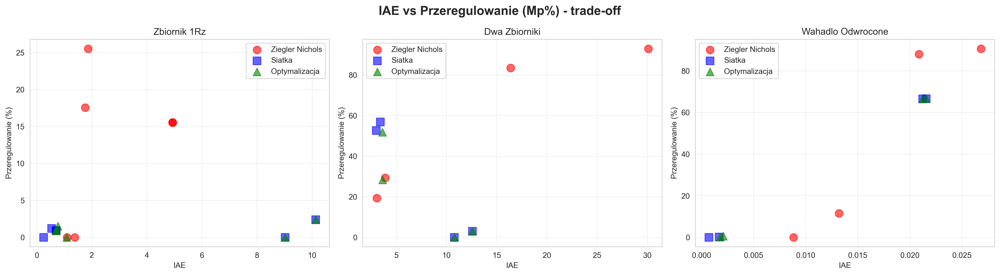
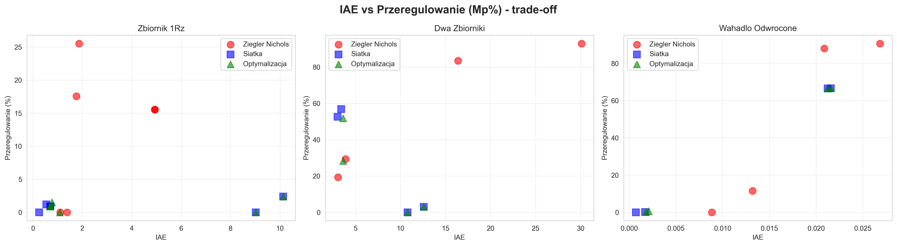
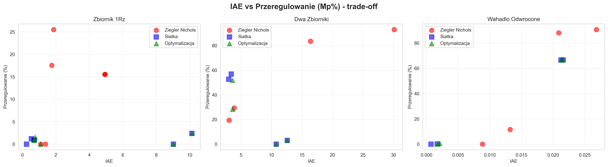

4. Wykresy porównawcze

 

Wygenerowano: 2025-11-06 10:59:14
Liczba analizowanych wyników: 45
Przeanalizowano 45 kombinacji regulator-model-metoda.
Globalny pass rate: 60.0% (27/45)
| Metoda | Pass Rate | IAE (śr±std) | Mp% (śr±std) | ts (śr) | Czas obliczeń (s) |
|---|---|---|---|---|---|
| Ziegler Nichols | 28.6% | 2.99±1.84 | 12.8±9.4% | 19.55s | - |
| Siatka | 100.0% | 3.15±4.40 | 0.9±0.8% | 23.18s | - |
| Optymalizacja | 100.0% | 3.30±4.30 | 0.9±0.8% | 23.70s | - |
| Metoda | Pass Rate | IAE (śr±std) | Mp% (śr±std) | ts (śr) | Czas obliczeń (s) |
|---|---|---|---|---|---|
| Ziegler Nichols | 25.0% | 13.36±12.72 | 56.3±37.3% | 62.64s | - |
| Siatka | 50.0% | 7.45±4.95 | 28.1±30.8% | 47.80s | - |
| Optymalizacja | 50.0% | 7.65±4.71 | 20.8±24.3% | 47.71s | - |
| Metoda | Pass Rate | IAE (śr±std) | Mp% (śr±std) | ts (śr) | Czas obliczeń (s) |
|---|---|---|---|---|---|
| Ziegler Nichols | 50.0% | 0.02±0.01 | 47.5±48.5% | 5.60s | - |
| Siatka | 50.0% | 0.01±0.01 | 33.3±38.4% | 3.18s | - |
| Optymalizacja | 50.0% | 0.01±0.01 | 33.5±38.2% | 3.22s | - |
| Miejsce | Model | Metoda | Pass Rate | IAE | Mp% | Czas (s) | Ocena* |
|---|---|---|---|---|---|---|---|
| 🥇 1 | Zbiornik 1Rz | Siatka | 100% | 3.15 | 0.9% | 0.0s | 0.18 |
| 🥈 2 | Zbiornik 1Rz | Optymalizacja | 100% | 3.30 | 0.9% | 0.0s | 0.19 |
| 🥉 3 | Dwa Zbiorniki | Optymalizacja | 50% | 7.65 | 20.8% | 0.0s | 22.31 |
| 4 | Dwa Zbiorniki | Siatka | 50% | 7.45 | 28.1% | 0.0s | 23.03 |
| 5 | Wahadlo Odwrocone | Siatka | 50% | 0.01 | 33.3% | 0.0s | 23.33 |
| 6 | Wahadlo Odwrocone | Optymalizacja | 50% | 0.01 | 33.5% | 0.0s | 23.35 |
| 7 | Wahadlo Odwrocone | Ziegler Nichols | 50% | 0.02 | 47.5% | 0.0s | 24.75 |
| 8 | Zbiornik 1Rz | Ziegler Nichols | 29% | 2.99 | 12.8% | 0.0s | 29.94 |
| 9 | Dwa Zbiorniki | Ziegler Nichols | 25% | 13.36 | 56.3% | 0.0s | 36.03 |
*Ocena = funkcja wielokryterialna (wagi: pass_rate=0.4, IAE=0.3, Mp=0.2, czas=0.1). Niższa wartość = lepsza.

Wszystkie dane źródłowe dostępne w katalogu: wyniki
Eksport danych CSV: raport_koncowy_dane.csv